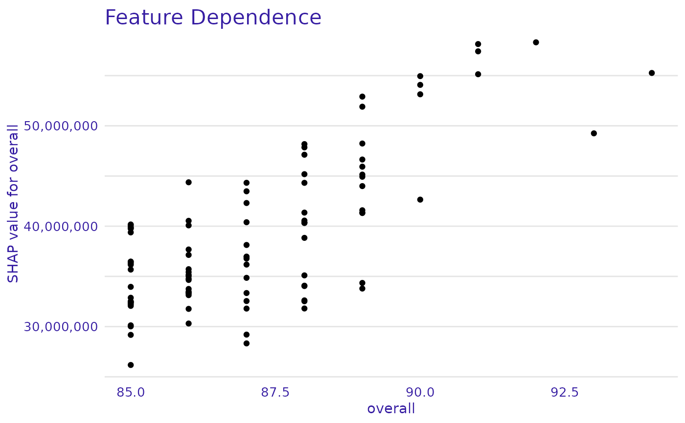

R/plot_feature_dependence.R
plot_feature_dependence.RdDepending on the value of a variable: how does it contribute into the prediction?
plot_feature_dependence(
treeshap,
variable,
title = "Feature Dependence",
subtitle = NULL
)A treeshap object produced with the treeshap function. treeshap.object.
name or index of variable for which feature dependence will be plotted.
the plot's title, by default 'Feature Dependence'.
the plot's subtitle. By default no subtitle.
a ggplot2 object
treeshap for calculation of SHAP values
plot_contribution, plot_feature_importance, plot_interaction
# \donttest{
library(xgboost)
data <- fifa20$data[colnames(fifa20$data) != 'work_rate']
target <- fifa20$target
param <- list(objective = "reg:squarederror", max_depth = 3)
xgb_model <- xgboost::xgboost(as.matrix(data), params = param, label = target,
nrounds = 20, verbose = FALSE)
unified_model <- xgboost.unify(xgb_model, as.matrix(data))
x <- head(data, 100)
shaps <- treeshap(unified_model, x)
#>
|0%----|------|20%---|------|40%---|------|60%---|------|80%---|------|100%
#> =---------------------------------------------------------------------- (0%)
=---------------------------------------------------------------------- (1%)
==--------------------------------------------------------------------- (2%)
===-------------------------------------------------------------------- (3%)
===-------------------------------------------------------------------- (4%)
====------------------------------------------------------------------- (5%)
=====------------------------------------------------------------------ (6%)
=====------------------------------------------------------------------ (7%)
======----------------------------------------------------------------- (8%)
=======---------------------------------------------------------------- (9%)
========--------------------------------------------------------------- (10%)
========--------------------------------------------------------------- (11%)
=========-------------------------------------------------------------- (12%)
==========------------------------------------------------------------- (13%)
==========------------------------------------------------------------- (14%)
===========------------------------------------------------------------ (15%)
============----------------------------------------------------------- (16%)
============----------------------------------------------------------- (17%)
=============---------------------------------------------------------- (18%)
==============--------------------------------------------------------- (19%)
===============-------------------------------------------------------- (20%)
===============-------------------------------------------------------- (21%)
================------------------------------------------------------- (22%)
=================------------------------------------------------------ (23%)
=================------------------------------------------------------ (24%)
==================----------------------------------------------------- (25%)
===================---------------------------------------------------- (26%)
===================---------------------------------------------------- (27%)
====================--------------------------------------------------- (28%)
=====================-------------------------------------------------- (29%)
======================------------------------------------------------- (30%)
======================------------------------------------------------- (31%)
=======================------------------------------------------------ (32%)
========================----------------------------------------------- (33%)
========================----------------------------------------------- (34%)
=========================---------------------------------------------- (35%)
==========================--------------------------------------------- (36%)
==========================--------------------------------------------- (37%)
===========================-------------------------------------------- (38%)
============================------------------------------------------- (39%)
=============================------------------------------------------ (40%)
=============================------------------------------------------ (41%)
==============================----------------------------------------- (42%)
===============================---------------------------------------- (43%)
===============================---------------------------------------- (44%)
================================--------------------------------------- (45%)
=================================-------------------------------------- (46%)
=================================-------------------------------------- (47%)
==================================------------------------------------- (48%)
===================================------------------------------------ (49%)
====================================----------------------------------- (50%)
====================================----------------------------------- (51%)
=====================================---------------------------------- (52%)
======================================--------------------------------- (53%)
======================================--------------------------------- (54%)
=======================================-------------------------------- (55%)
========================================------------------------------- (56%)
========================================------------------------------- (57%)
=========================================------------------------------ (58%)
==========================================----------------------------- (59%)
===========================================---------------------------- (60%)
===========================================---------------------------- (61%)
============================================--------------------------- (62%)
=============================================-------------------------- (63%)
=============================================-------------------------- (64%)
==============================================------------------------- (65%)
===============================================------------------------ (66%)
===============================================------------------------ (67%)
================================================----------------------- (68%)
=================================================---------------------- (69%)
==================================================--------------------- (70%)
==================================================--------------------- (71%)
===================================================-------------------- (72%)
====================================================------------------- (73%)
====================================================------------------- (74%)
=====================================================------------------ (75%)
======================================================----------------- (76%)
======================================================----------------- (77%)
=======================================================---------------- (78%)
========================================================--------------- (79%)
=========================================================-------------- (80%)
=========================================================-------------- (81%)
==========================================================------------- (82%)
===========================================================------------ (83%)
===========================================================------------ (84%)
============================================================----------- (85%)
=============================================================---------- (86%)
=============================================================---------- (87%)
==============================================================--------- (88%)
===============================================================-------- (89%)
================================================================------- (90%)
================================================================------- (91%)
=================================================================------ (92%)
==================================================================----- (93%)
==================================================================----- (94%)
===================================================================---- (95%)
====================================================================--- (96%)
====================================================================--- (97%)
=====================================================================-- (98%)
======================================================================- (99%)
======================================================================= (100%)
plot_feature_dependence(shaps, variable = "overall")

# }